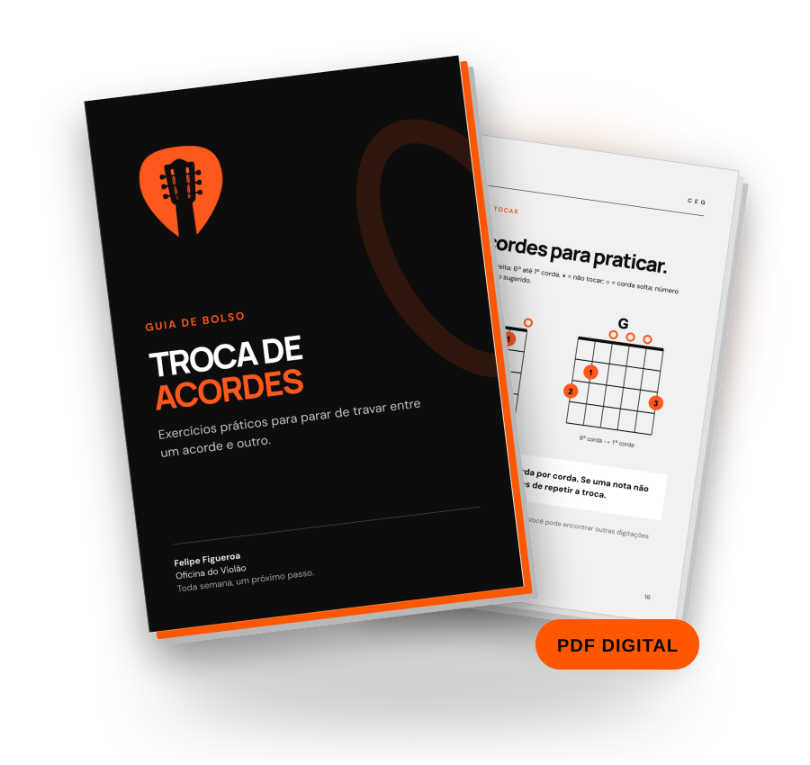

Movimento mínimo
Pare de desmontar completamente a mão a cada troca.
GUIA DE BOLSO • OFICINA DO VIOLÃO
Entenda por que seus dedos se perdem, corte os movimentos que atrasam sua mão e pratique exercícios específicos para trocar de acordes sem desmontar a forma nem parar a batida.
QUERO DESTRAVAR MINHAS TROCASMaterial digital • Prático • Direto ao ponto

O problema aparece na passagem
Você monta C ✓
Você monta G ✓
Você monta D ✓
Mas quando toca...
C → G → DVocê precisa aprender a trocar entre eles.
O que você vai praticar
Pare de desmontar completamente a mão a cada troca.
Crie uma lógica para montar as formas que já conhece.
Treine o trecho em que você trava, em vez de repetir a música inteira.
Insira contagem e mantenha a pulsação com batidas simples.
Leve o movimento para pequenas progressões musicais.
Um detalhe que Felipe ensina desde o começo
Comece a organizar a forma seguindo a direção da 6ª para a 1ª corda. Corda que não entra no acorde não precisa receber dedo. É uma ordem mental e motora, não uma fórmula mágica.
Esse hábito simples ajuda a dar lógica à mão agora e a preparar formas mais complexas no futuro.
Dentro do Guia
Um material digital curto para abrir e começar a praticar. Especialmente útil se você já conhece alguns acordes, mas ainda para na hora de passar de um para outro.
Guia digital · 28 páginas · PDF
Um espaço para compartilhar a prática, trocar experiências e continuar evoluindo com outras pessoas que também estão no violão.

Quem vai te ensinar
Sou músico, guitarrista, violonista, produtor e professor. Trabalho profissionalmente com música desde 2007.
Na Oficina do Violão, organizo o que aprendi em passos que você consegue entender, praticar e levar para a música.
Seu próximo passo
Leve o Guia de Bolso para a sua próxima prática.
Acesso ao Guia de Bolso: Troca de Acordes
R$14,90Dúvidas frequentes
É especialmente indicado para quem já conhece alguns acordes, mesmo que ainda esteja no começo.
Não. Os exercícios partem de formas de acordes conhecidas e mostram como praticar as trocas.
Não. É um guia digital em PDF.
Não. O guia propõe sessões curtas e direcionadas. O resultado depende da sua prática e do seu estágio atual.
Sim. A mecânica de troca apresentada vale para os dois.
Sim. Você também recebe acesso ao grupo para compartilhar sua prática e trocar experiências com outras pessoas que estão aprendendo violão.